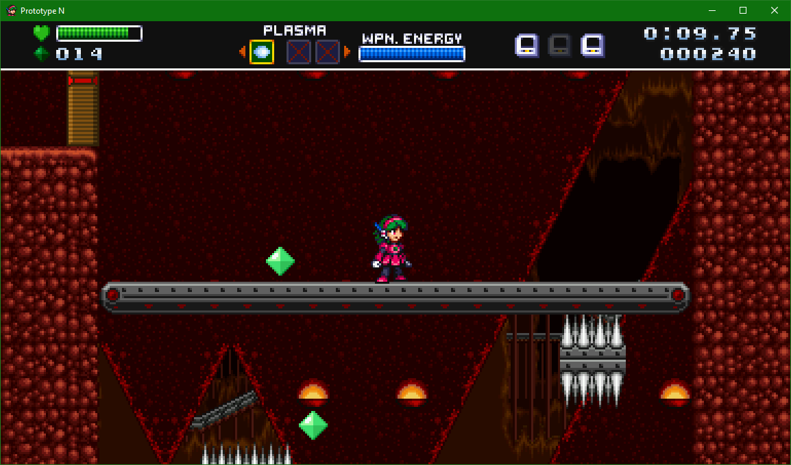
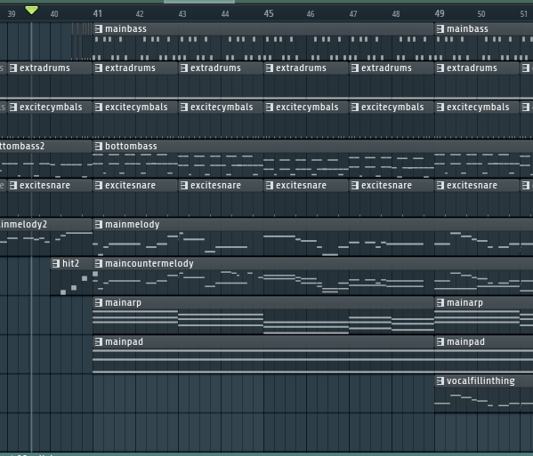

Prototype N
In the beginning of August 2021, I was in contact with my friend Arrietty, who was preparing a demo of her personal game for SAGE, a fangame and indie game expo. She was in need of some audio to use for the game, so I volunteered to help.

Most of my work went toward making music for Abandoned Mines, a level that takes you deep underground into a cave filled with all manner of traps. My initial drafts were much slower in pace and leaned more on the "chunky" sound of certain FM patches.
As I got more visuals and footage to go by the song started to take a more energetic form.
Still, many elements of the arrangement stayed through its development, such as prominent usage of FM synthesis, and square wave flourishes. Nine days later, I finished the song:

I also worked on some sound effects specific to the level, for example the sounds made by the spike crushers and grappling rails. It was a terrific chance to flex my skills with sound design and usage of samples. For example, to get the sort of cartoony, semi-realistic grumble of a large boulder, I took an old, low-fidelity sample of a rifle being fired, EQ'd the high frequencies to be more prominent, then pitched the sample down as it played.
Prototype N can be downloaded here.